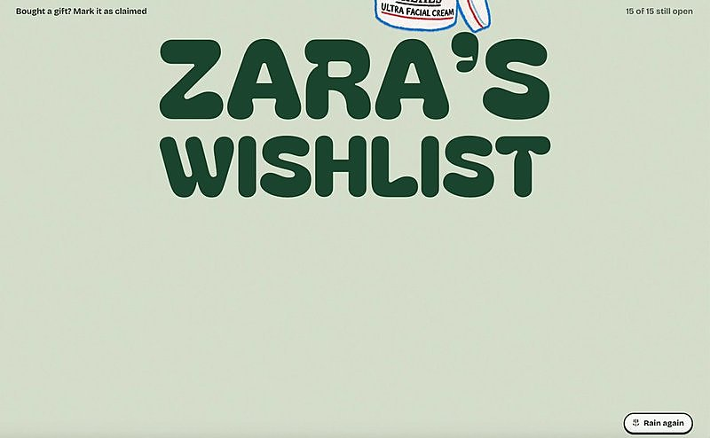

AI 日报 · 10月16日
AI 的边界要能被看见
Google 为 AI 搜索增加更明确的来源入口，Vercel 公开沙箱挑战发现的内核与信任边界问题。Every 访谈提醒团队在开发更快时继续追踪真实用户反馈；Builder 动态则把技术细节、隔离和产品实验带回具体场景。
来源可见
Agent 沙箱
产品迭代
原始证据
4
Builder 动态
4
今日上榜项目
3
官方原始来源
1
公开视频
今日要点
Google 10 月 15 日宣布在 AI Mode 和 AI Overviews 中加入更清楚的正文内链接、官方网站专区、新闻视觉卡片与创作者资料入口。这是产品呈现调整；是否改善外部站点流量仍需后续观察。
Vercel 披露两周内收到 1,285 份报告、支付 24.2 万美元奖励，发现一处 Linux 内核零日漏洞及其他隔离问题。公司称未发现客户数据被访问；部分攻击在研究者自建环境复现，适用范围须按原文区分。
深度对话
Matt Hartman 谈技术转向与更快的产品反馈
Every 于 10 月 14 日发布 Natalia Quintero 对 Factorial Capital 创始人 Matt Hartman 的访谈。Hartman 回忆早期投资 Hugging Face 的判断，讨论团队如何从聊天应用转向开放模型生态；以下是受访者经验与观点，不是通用创业成功公式。
诚实看留存，再决定转向
Hartman 称 Hugging Face 团队看到早期消费者产品的留存不足，随后开源 Transformers 实现，并围绕研究者与开发者需求发展模型平台。
开发周期缩短，理解用户更重要
他认为 AI 帮助编码后，团队可以更快把反馈变成新版本；观察真实使用、提炼产品判断的能力因此更有价值。访谈中的“两个月变两天”是说明性设想，并非行业统计。
亲自做工具，才会看见维护成本
Hartman 讲述自己开发本地语音转写工具 Ghost Pepper 后，对持续维护和付费软件价值有了更具体的理解。
资讯精选
官方原文速览
OpenAI｜为 AI 数学成果的人工审查提供资助
OpenAI 在 10 月 6 日数学研究文章的 10 月 15 日更新中宣布，向 Simons Foundation 的相关计划提供 500 万美元，并为受支持研究者提供模型与算力资源。
Builder 动态
从工程边界到小型产品实验
Guillermo Rauch｜Agent 隔离要同时检查网络与虚拟化
Vercel CEO 根据公开挑战结果，将 Agent 的越界风险分为网络通道与虚拟化边界两类。他称目前未发现客户数据受损；具体漏洞细节与演示环境应以 Vercel 技术复盘为准。
Thariq｜技术参与要深入关键细节
Anthropic Claude Code 团队成员 Thariq 认为，仅说“要懂技术”还不够：技术人员需深入代码的关键部分，非技术人员也应在适当层级理解系统如何运作。这是其个人工作建议。
Zara Zhang｜把礼物清单做成可玩的网页
Zara 展示个人愿望清单网站，把礼物登记做成有明显视觉风格和交互的页面。原帖附演示视频；画面只说明这一个作品的体验。

Aditya Agarwal｜为高风险想法试验不同融资方式
SPC 合伙人 Aditya Agarwal 宣布向少数探索大胆想法的人提供 20 万美元、估值不设上限的实验方案，并认为核能公司与 AI 应用不应套用同一种种子轮结构。条款与后续资本安排仍应以项目正式文件为准。
GitHub Trending
今日榜单的四个项目


按 10 月 16 日 GitHub Trending 实时榜单筛选；星标、分叉和语言为本次 GitHub API 快照，会继续变化。避开昨日重点介绍的仓库。
今日思考
AI 搜索需要让读者回到资料原站，Agent 沙箱需要明示网络、主机和存储的边界，产品团队需要持续看真实用户如何使用。三者指向同一件事：加速只有在来源、权限和反馈可见时才更容易被检验。今日一问：你的 AI 工作流里，哪一处边界最难被使用者看见？
参考来源